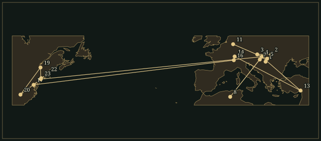

BélaBartók
A pianist and fieldworker who turned the modes, rhythms and performance habits of peasant music into new kinds of quartet and orchestral argument.
- Trained
- Budapest Academy of Music, 1899–1903: piano with István Thomán, composition with Hans Koessler
- Posts
- Piano professor, Budapest Academy, 1907–34 · Hungarian Academy of Sciences folk-music project, 1934–40 · Columbia University research in American exile
- Fieldwork
- Hungarian, Slovak and Romanian villages · Biskra, Algeria, 1913 · Turkey, 1936
- Output
- Six string quartets · three piano concertos · two violin concertos · three stage works · folk-music collections and pedagogical music
50.1Life
Bartók was born in Nagyszentmiklós, a town in the Hungarian half of Austria-Hungary which became part of Romania after the First World War. His father, who directed an agricultural school, died in 1888; his mother, Paula Voit, supported Béla and his sister by teaching. After several moves the family settled in Pozsony, now Bratislava. The changing names on this map matter: the Hungarian, Slovak and Romanian communities he later recorded occupied overlapping musical territories. His professional education began within the German-speaking conservatoire tradition.
At the Budapest Academy from 1899 to 1903, he studied piano with István Thomán, a pupil of Liszt, and composition with Hans Koessler. Hearing Richard Strauss’s Also sprach Zarathustra in 1902 helped release him from student exercises. Kossuth, composed in 1903, made the Hungarian revolutionary leader the subject of a large orchestral narrative and caricatured Haydn’s imperial anthem as the Austrian enemy. This early nationalist programme preceded the comparative research that would complicate his understanding of national music.
The phonographA singer’s performance
In 1904 he wrote down songs sung by Lidi Dósa, a young domestic servant from Transylvania. His collaboration with Zoltán Kodály developed from 1906, when they published a joint collection of Hungarian folk-song settings. Field trips combined notebooks with wax-cylinder recordings: a singer’s tempo, ornaments and successive verses could be studied again after returning home. Bartók sought rural repertories different from the composed popular songs and urban instrumental styles commonly advertised as Hungarian music. His category of peasant music described transmission and social setting within that wider repertory.
He distinguished speech-like parlando-rubato delivery from the regular pulse of tempo giusto, classified phrase endings and syllable counts, and examined pentatonic and modal pitch patterns. A transcription had to register differences that conventional notation could easily flatten. The resulting collections contained thousands of Romanian and Slovak melodies as well as Hungarian ones. In 1913 he recorded rural Arab music around Biskra in Algeria; in 1936 he collected in Turkey with Ahmet Adnan Saygun. Comparison exposed exchanges between neighbouring repertories.
Scholarship supplied composition with several kinds of material. In an arrangement, the borrowed tune might remain recognisable while its accompaniment became harmonically abrasive. Elsewhere Bartók invented a melody in a learned rural idiom, or absorbed intervals and rhythmic habits without imitating any particular song. For Children uses identifiable Hungarian and Slovak melodies; a quartet need contain none. Kodály also introduced him to Debussy’s music, whose modal harmony demonstrated another route beyond major–minor syntax. Folk-song study and French modernism reinforced one another.
His attachment to the violinist Stefi Geyer in 1907–08 produced the early Violin Concerto, withheld from publication as a complete work during his lifetime. A related motif enters the First String Quartet of 1908–09. Its slow contrapuntal opening and increasingly active later movements transform a private association into a sustained instrumental argument. In 1909 Bartók married Márta Ziegler; their son Béla was born in 1910. Teaching piano at the Academy, a post he held from 1907, paid for a life divided between performance, composition and collecting.
Stage and cityBeyond the village
Duke Bluebeard’s Castle, composed in 1911 to Béla Balázs’s text, gives two singers a continuous drama organised around seven opened doors. Hungarian speech inflects the vocal lines; the orchestra makes the doors audible through changes of register, harmony and instrumentation. The fifth door releases C major against the darker tonal regions surrounding it, while semitone friction marks the recurrent discovery of blood. The opera reached the Budapest stage only in 1918, after the successful 1917 production of another Balázs collaboration, the ballet The Wooden Prince.
The war and the subsequent redrawing of borders curtailed regular fieldwork. Bartók increasingly worked on transcription and classification, while The Miraculous Mandarin, drafted in 1918–19 and orchestrated in 1924, confronted metropolitan exploitation. Men force a girl to lure customers; an apparently indestructible stranger survives their violence until his desire is answered. Repeated figures, brass attacks and sliding wind lines carry this urban drama. The Cologne premiere in 1926 provoked a scandal and a local ban. Modern urban theatre belonged to his work as firmly as village songs did.
The Dance Suite of 1923 was commissioned for the fiftieth anniversary of Budapest’s unification. It brought together invented themes modelled on several folk idioms, connected by a recurring ritornello. The same year he divorced Márta and married his piano pupil Ditta Pásztory; their son Péter was born in 1924. Ditta later became his partner in two-piano performances. International tours and publication by Universal Edition brought his music beyond the Hungarian institutions that had initially resisted it.
1926–39Attacks, arches and counterpoint
In 1926 the Piano Sonata, First Piano Concerto and Out of Doors investigated the keyboard as a struck instrument. Repeated notes, sharply differentiated attacks and percussion-like accompaniments coexist with sustained resonance. ‘The Night’s Music’, the fourth piece of Out of Doors, separates a quiet, dissonant background from intermittent calls and more continuous melody. This layering became a recurring slow-movement technique: independent kinds of activity occupy the same nocturnal space.
The Second Quartet, completed in 1917, places an insistent fast movement before a withdrawn slow finale. The Third, written in 1927, compresses its argument into connected sections, transforming small intervallic cells through imitation and changing instrumental colour. Bowing near the bridge, glissandi, harmonics and pizzicato articulate the structure. The Fourth Quartet of 1928 enlarges this vocabulary into five movements; its central slow movement exposes a cello line against sustained, relatively motionless strings, whereas its fourth movement works entirely with plucked sound.
The Fifth Quartet, commissioned by Elizabeth Sprague Coolidge in 1934, makes unequal beat groups explicit in its central Alla bulgarese. Such designs organise contrast across a whole work while individual movements retain sonata, variation or contrapuntal procedures. A recurring theme can return inverted, compressed or with different accents. Bartók’s relationship to Beethoven lies partly in this economy of transformation.
In Cantata profana (1930), nine hunters become stags and cannot return to their father’s house. Bartók fashioned the text from Romanian colinde, seasonal songs whose stories could preserve non-Christian material, but composed the musical themes himself. Explaining the distinction to Octavian Beu in January 1931, he rejected the inference that a Romanian text made him a Romanian composer. He also described international brotherhood as an artistic aim. The letter joins a declared Hungarian identity to the deliberate acceptance of Romanian, Slovak, Arabic and other influences.
In 1934 he left regular Academy teaching to prepare the Hungarian folk-song collection at the Academy of Sciences, organising approximately 13,000 melodies. Mikrokosmos, assembled chiefly in 1932–39, similarly connects practice with analysis: its 153 piano pieces introduce imitation, independent hands, unfamiliar modes and irregular grouping through playable problems. Music for Strings, Percussion and Celesta, commissioned by Paul Sacher in 1936, expands those concerns into two separated string orchestras. Its opening fugue moves from A towards an E♭ climax before contracting again.
The Sonata for Two Pianos and Percussion followed in 1937, distributing pitched attacks and unpitched sounds among four players. In the Second Violin Concerto of 1937–38, the finale transforms material from the opening movement, while the centre is a set of variations. These are different solutions to the problem of large-scale coherence. Bartók’s discussion of polymodal chromaticism, developed in his 1943 Harvard lectures, describes another kind of integration: modes sharing a fundamental can supply chromatic notes while retaining a tonal centre.
AmericaResearch and unfinished scores
After Nazi Germany absorbed Austria in 1938, Bartók transferred his publishing allegiance to Boosey & Hawkes in London. Opposition to fascism and Hungary’s political direction made departure increasingly urgent. The Sixth Quartet of 1939 begins each movement with music marked Mesto, sorrowful; what first serves as an introduction eventually occupies the entire finale. His mother died that December. Following an American concert visit in spring 1940, he and Ditta left Europe in the autumn. He retained Hungarian citizenship throughout his political exile.
At Columbia University he transcribed and classified recordings from Milman Parry’s South Slavic collection. The research assignment continued his comparative work. Concert opportunities proved insufficient, illness restricted his activity, and leukaemia eventually became fatal. Koussevitzky’s commission for the Concerto for Orchestra in 1943 nevertheless brought a substantial new score. Its five movements set an Elegy between lighter counterparts, then finish with a fast contrapuntal finale; the title refers to virtuoso treatment of orchestral sections.
Yehudi Menuhin commissioned the Sonata for Solo Violin of 1944, whose fugue requires one instrument to sustain several implied voices. In 1945 Bartók wrote the Third Piano Concerto for Ditta, placing an Adagio religioso between its outer movements. At his death on 26 September, its last seventeen bars still required orchestration, completed by Tibor Serly. The Viola Concerto survived in sketches and needed more extensive reconstruction. His Romanian and other research collections also continued into posthumous publication; his remains were transferred from New York to Budapest in 1988.
50.2Places

Read all 25 place records and their sources
- Sânnicolau Mare · 1881-03-25 · born (documented)
Born in Nagyszentmiklós, then in the Kingdom of Hungary.
Hungarian Institute for Musicology: Béla Bartók biography · OpenStreetMap place record
- Vynohradiv · 1889–1892 · childhood (documented)
Lived in Nagyszőlős and gave his first public recital in 1892.
- Bratislava · 1894–1899 · studied (documented)
Completed school in Pozsony and studied piano and composition locally.
- Budapest · 1899–1903 · studied (documented)
Studied piano with Thomán and composition with Koessler at the Royal Academy.
Hungarian Institute for Musicology: Béla Bartók biography · Wikipedia coordinate records
- Vésztő · 1904–1905 · travelled (documented)
Transcribed early folk melodies while visiting his brother-in-law.
Bartók Archives: ethnomusicological fieldwork · OpenStreetMap place record
- Budapest · 1907–1934 · worked (documented)
Taught piano at the Academy of Music.
Hungarian Institute for Musicology: Béla Bartók biography · Wikipedia coordinate records
- Iregszemcse · 1907 · travelled (documented)
Collected Hungarian peasant songs in Felsőireg during the spring.
Bartók Archives: ethnomusicological fieldwork · OpenStreetMap place record
- Biskra Algeria · 1913 · travelled (documented)
Recorded Arab folk musicians during an Algerian collecting journey.
Hungarian Institute for Musicology: Béla Bartók biography · OpenStreetMap place record
- Hungarian State Opera House Budapest · 1917-05-12 · premiere (documented)
The Wooden Prince received its first staging. The Wooden Prince.
Bartók Archives: chronological catalogue of compositions · OpenStreetMap place record
- Hungarian State Opera House Budapest · 1918-05-24 · premiere (documented)
Bluebeard’s Castle received its first staging. Bluebeard’s Castle.
Bartók Archives: chronological catalogue of compositions · OpenStreetMap place record
- Cologne · 1926-11-27 · premiere (documented)
The Miraculous Mandarin caused a scandal at its stage premiere. The Miraculous Mandarin.
Bartók Archives: chronological catalogue of compositions · Wikipedia coordinate records
- Budapest · 1932–1940 · lived (documented)
Lived at Csalán út 29, now the Bartók Memorial House.
- Adana · 1936 · travelled (documented)
Collected Turkish folk music with Ahmet Adnan Saygun.
Hungarian Institute for Musicology: Béla Bartók biography · OpenStreetMap place record
- Basel · 1937-01-21 · premiere (documented)
Paul Sacher conducted Music for Strings, Percussion and Celesta. Music for Strings, Percussion and Celesta.
Bartók Archives: chronological catalogue of compositions · OpenStreetMap place record
- Basel · 1938-01-16 · premiere (documented)
Played with Ditta Pásztory at the sonata’s premiere. Sonata for Two Pianos and Percussion.
Bartók Archives: chronological catalogue of compositions · OpenStreetMap place record
- Saanen · 1939 · lived (documented)
Composed the Divertimento during a stay arranged by Paul Sacher. Divertimento.
- Library of Congress Washington · 1940-04-13 · travelled (documented)
Performed a chamber recital with Joseph Szigeti.
- New York City · 1940-10–1945 · exile (documented)
Settled with Ditta; transcribed South Slavic recordings at Columbia University.
Hungarian Institute for Musicology: Béla Bartók biography · Wikipedia coordinate records
- Saranac Lake New York · 1943–1945 · lived (documented)
Spent recuperative summers in the Adirondacks and composed the Concerto for Orchestra. Concerto for Orchestra.
- Asheville North Carolina · 1943–1944 · lived (documented)
Worked on the Solo Violin Sonata while staying in North Carolina. Sonata for Solo Violin.
- Carnegie Hall New York · 1944-11-26 · premiere (documented)
Yehudi Menuhin introduced the Solo Violin Sonata. Sonata for Solo Violin.
Bartók Archives: chronological catalogue of compositions · OpenStreetMap place record
- Symphony Hall Boston · 1944-12-01 · premiere (documented)
Koussevitzky conducted the Concerto for Orchestra. Concerto for Orchestra.
Bartók Archives: chronological catalogue of compositions · OpenStreetMap place record
- Ferncliff Cemetery Hartsdale · 1945 · buried (documented)
Initially buried in Ferncliff Cemetery.
- New York City · 1945-09-26 · died (documented)
Died of leukaemia.
- Farkasréti Cemetery Budapest · 1988-07-07 · buried (documented)
Remains returned to Hungary and reburied with state honours.
Hungarian Institute for Musicology: Béla Bartók biography · OpenStreetMap place record
Inheritance
Specific encounters, borrowings and transformations. Follow a connection to its evidence.
What went out
- No sourced connection in this collection yet.
50.3The Sound
How the music is built — harmony, line, rhythm, colour, form.
𝅘𝅥Folk sources & melody
A pentatonic tune, a modal dance and an ornamented lament do different jobs. Bartók distinguished actual settings, invented folk-like melodies and composition in which rural habits had been absorbed without quotation. The Romanian Folk Dances belong to the first category; the Dance Suite uses invented material. His Cantata profana sets borrowed Romanian texts to original melodies.
Speech rhythm, a narrow recurring interval and a particular cadence can survive after the source’s surface has disappeared. The Bartók Archives’ source database makes a borrowed tune’s identity testable against recordings and transcriptions.
♮Harmony
Modal collections coexist with chromatic saturation. The acoustic scale, C–D–E–F♯–G–A–B♭ when placed on C, combines a raised fourth with a lowered seventh. Polymodal chromaticism superimposes or combines different modes on one fundamental. Chromatic notes can belong to a modal line as well as function as altered dominant harmony.
Ernő Lendvai’s axis system is a later analytical account of Bartók’s tonal relationships. Like proposed golden-section proportions, it offers a theory to test against a particular score.
𝄾Rhythm
Flexible song delivery and strict dance pulse are complementary resources. In additive metres, equal small units form unequal beats: 2+2+3 quavers make a seven-quaver bar felt as short–short–long. Bartók studied what he called Bulgarian rhythm; these groupings occur in Bulgaria and elsewhere, among the many rhythms of Hungarian folk music.
Regular metres can be equally unstable when accents move across their bar lines. The piano’s repeated attacks make displacement audible, with scope for varied touch and flexible tempo.
𝄋Form
The Fourth and Fifth quartets pair movements across a central movement. Within these arches, sonata form, variation and thematic return continue to operate. The Sixth lets a recurring slow introduction expand until it takes over the finale. A family resemblance between motives supplies continuity where the sequence of tempos differs.
In the Second Violin Concerto the finale transforms the first movement. Listen for changes of metre, interval and articulation that preserve a theme’s recognisable contour.
𝆏Timbre & night music
Muted strings, bridge-adjacent bowing, harmonics and glissandi give a quartet several contrasting acoustic states. Snap pizzicato pulls a string far enough from the fingerboard for it to strike back against the wood; Bartók uses it within the Fourth Quartet’s otherwise plucked fourth movement.
Night music separates layers: a relatively static dissonant field, brief calls and a more sustained melodic voice. ‘The Night’s Music’ in Out of Doors establishes the piano version; the slow movement of Music for Strings, Percussion and Celesta distributes related contrasts among strings, keyboards and percussion.
𝄢Counterpoint & space
In the first movement of Music for Strings, Percussion and Celesta, fugal entries spread from A in opposing fifth-related directions towards E♭. The texture’s growth is also a tonal plan. The score separates the strings into two ensembles, so antiphonal exchanges in the faster movements have a physical location.
The Sonata for Two Pianos and Percussion places two percussionists beside two pianists. In the 1944 solo-violin fugue, conversely, one performer must suggest the independence of several contrapuntal parts through register, double stops and articulation.
50.4Works
A listening path, not a complete catalogue.
- 1908–09String Quartet No. 1Op. 7 · Sz. 40 · BB 52Two violins, viola and celloThree connected movements lead from a slow contrapuntal opening towards fast dance. A motif associated with Stefi Geyer undergoes thematic development.
- 1911Duke Bluebeard’s CastleOp. 11 · Sz. 48 · BB 62Two singers, spoken prologue and orchestraBéla Balázs’s one-act drama of seven doors. Composed in 1911 and revised before the 1918 Budapest premiere; the fifth door’s C major expansion shapes the structure.
- 1918–19The Miraculous MandarinOp. 19 · Sz. 73 · BB 82Pantomime for large orchestra and wordless mixed chorusOrchestrated in 1924; premiered in Cologne in 1926. The full stage score extends beyond the familiar concert suite, with a choral sonority in the final part of the drama.
- 1923Dance SuiteSz. 77 · BB 86OrchestraFive dances and a finale, with a recurring ritornello. Written for Budapest’s jubilee, but built from invented melodies reflecting more than one people’s music.
- 1926Out of DoorsSz. 81 · BB 89Solo pianoFive pieces range from drum-like attacks to the layers of “The Night’s Music” and the repeated-note pursuit of the final “Chase”. The keyboard’s decay is as important as its impact.
- 1928String Quartet No. 4Sz. 91 · BB 95Two violins, viola and celloFive movements in paired relationships around a slow centre. A muted scherzo is answered by an entirely pizzicato movement; the outer movements share thematic material.
- 1930Cantata profanaSz. 94 · BB 100Tenor, baritone, double mixed chorus and orchestraThe nine sons transformed into stags: a Romanian folk narrative refashioned by Bartók, with original musical themes. Premiered in London in 1934 under Aylmer Buesst.
- 1936Music for Strings, Percussion and CelestaSz. 106 · BB 114Two string orchestras, percussion, piano, harp and celestaPaul Sacher’s commission for the Basle Chamber Orchestra. A slow opening fugue, two fast movements and a central nocturnal Adagio are connected by returning thematic material; the actual order is slow–fast–slow–fast.
- 1937Sonata for Two Pianos and PercussionSz. 110 · BB 115Two pianists and two percussionistsThree movements for four equal participants. Bartók and Ditta played the pianos at the Basel premiere in January 1938; the ending lets the percussion continue after the pianos withdraw.
- 1939String Quartet No. 6Sz. 114 · BB 119Two violins, viola and celloA Mesto melody introduces a Vivace, march and burletta before occupying the whole last movement. Dedicated to the Kolisch Quartet, which gave the first performance in New York in 1941.
- 1943Concerto for OrchestraSz. 116 · BB 123OrchestraKoussevitzky commissioned it in memory of his wife Natalie and conducted the Boston premiere in 1944. Instrumental pairs distinguish the second movement; the central Elegy recalls the opening movement’s material. Bartók revised the finale’s ending in 1945.
- 1945Piano Concerto No. 3 in E majorSz. 119 · BB 127Piano and orchestraWritten for Ditta, with an Adagio religioso containing a contrasting bird-call episode. Tibor Serly orchestrated Bartók’s last seventeen bars after the composer’s death.
50.5In the Score
Short examples, engraved and playable. Press play; notes light up as they sound.
Harmonic vocabulary · schematicAn acoustic scale on C
Unequal beats · schematicSeven quavers grouped 2+2+3
Polymodal chromaticism · schematicTwo modes, one fundamental
Night-music texture · schematicA quiet field and intermittent calls
50.6Sister Arts
Paintings and poems that share a world with this music.

The phonograph horn makes the act of collection visible: a particular singer performs for a recording machine while other villagers gather nearby. Zobordarázs is now Dražovce, Slovakia. The Bartók Archives dates this photograph to 1907, rather than the 1908 supplied in the Commons metadata. Pair it with the Slovak volumes of For Children: the compositional source is a performed and variable melody.

Kováts photographed Bartók at Gyergyószentmiklós, now Gheorgheni, during the collecting expedition of 1907. This identification follows the archive’s 2022 exhibition catalogue, rather than Commons’ approximate 1903 date. The trip’s pentatonic Hungarian songs belong to the documented background of the stylistic change around the Fourteen Bagatelles and First Quartet.

Csontváry, who died in 1919, painted a Lebanese cedar. The Hungarian painter’s foreign subject shows the reach of his material beyond his own country. Beside Bartók’s night music, the isolated branching form and broad background offer a comparison of foreground and field. The pairing is visual, with no claim of musical influence. The National Gallery catalogue records the canvas and its date.

The theatre’s masonry establishes a close, articulated foreground against sea, coast and mountain. Paired with Music for Strings, Percussion and Celesta, it invites comparison between a large design and the separate planes through which that design becomes perceptible. Csontváry was an older Hungarian contemporary working outside academic naturalism; the link here is formal, with no documented connection to the score.
50.7Listen
Recordings worth seeking out.
- Violin Sonata No. 2 · Rhapsody No. 1Joseph Szigeti, violin; Béla Bartók, pianoVanguard · 1940The Library of Congress recital of 13 April, preserved live. Bartók’s flexible responses and Szigeti’s slides correct the idea that this music requires uniformly percussive delivery. The National Recording Registry essay documents the programme and performance practice.
- Concerto for OrchestraChicago Symphony Orchestra, Fritz ReinerRCA Victor · 1955Recorded on 22 October, as documented by the Chicago Symphony archives. A reference for the contrast between paired winds, string mass and the contrapuntal finale. Reiner recorded Music for Strings, Percussion and Celesta separately in 1958.
- Piano Concertos Nos. 1–3Géza Anda; Berlin Radio Symphony Orchestra, Ferenc FricsayDeutsche Grammophon · 1959–60Nos. 2 and 3 were recorded in 1959, No. 1 in 1960. The cycle places the earlier concertos’ attack-driven writing beside the Third’s more sustained melodic lines. DG’s catalogue identifies the performers; its 1995 date belongs to the CD reissue.
- Duke Bluebeard’s CastleChrista Ludwig, Walter Berry; London Symphony Orchestra, István KertészDecca · 1965Ludwig’s Judith and Berry’s Bluebeard in Hungarian, recorded at Kingsway Hall. Listen to the orchestra’s distinct treatment of each door. Decca Eloquence supplies the session and production information.
- The Six String QuartetsTakács QuartetDecca · 1996The complete cycle with Edward Dusinberre, Károly Schranz, Roger Tapping and András Fejér, recorded at Neumarkt. Follow the changing role of slow music from the First’s opening to the Sixth’s finale. This later cycle followed the ensemble’s Hungaroton recordings; the sessions preceded the 1997 release.
50.8Lineage
Beethoven supplied models of thematic transformation, Debussy alternatives to functional harmony, and Kodály a sustained scholarly partnership. The singers and instrumentalists Bartók recorded were identifiable contributors to his sources. Ligeti and Kurtág inherited both the quartet writing and the pedagogy of concise musical problems; Boulez repeatedly conducted the orchestral scores. Later composers could learn from rhythmic grouping, registral separation or motivic economy while drawing on their own materials.
Questions to take away
Can the distance between two notes identify a pair as clearly as its tone colour?
Five instrumental pairs keep five different distances between their notes. A brass chorale interrupts the procession before the pairs return with new companions.
Concerto for Orchestra, Sz. 116 · II. Giuoco delle coppie — Allegretto scherzandoHow can stillness and sudden outcry belong to the same musical argument?
The central Elegia recalls the first movement’s slow introduction, surrounding its lament with separate layers of rustling accompaniment and exposed calls. Its strongest outbursts grow from a nearly motionless background.
Concerto for Orchestra, Sz. 116 · III. Elegia — Andante non troppo
Further reading
- David Cooper, Béla Bartók (Yale University Press, 2015).biography
Treats ethnomusicology, composition, teaching and piano performance alongside the political circumstances of emigration.
- László Somfai, Béla Bartók (University of California Press, 1996).study
A source-oriented study, catalogued under manuscripts and criticism of Bartók’s compositions.
- Budapest Bartók Archives, ‘Bartók compositions: In chronological order’ (online catalogue).catalogue
An institutional work-list for checking dates and the sequence of compositions.
Cite this page
No publication date is asserted. The access date below is the site build date; replace it with the date you consulted the page.
Chicago
Contrapunctus. “Béla Bartók.” Accessed 18 October 2026. https://mottopanikeiku.github.io/contrapunctus/composers/bartok.html.
BibTeX
@misc{contrapunctus-composers-bartok,
author = {{Contrapunctus}},
title = {Béla Bartók},
howpublished = {\url{https://mottopanikeiku.github.io/contrapunctus/composers/bartok.html}},
note = {Accessed 2026-10-18}
}